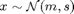

Contents
gpT.m
Summary: Test derivatives of gp*-family of functions. It is assumed that the gp* function computes the mean and the variance of a GP prediction for a Gaussian distributed input . The GP-family of functions is located in rootDir/gp and is called gp*.m
function [dd dy dh] = gpT(deriv, gp, m, s, delta)
Input arguments:
deriv desired derivative. options: (i) 'dMdm' - derivative of the mean of the GP prediction wrt the mean of the input distribution (ii) 'dMds' - derivative of the mean of the GP prediction wrt the variance of the input distribution (iii) 'dMdp' - derivative of the mean of the GP prediction wrt the GP parameters (iv) 'dSdm' - derivative of the variance of the GP prediction wrt the mean of the input distribution (v) 'dSds' - derivative of the variance of the GP prediction wrt the variance of the input distribution (vi) 'dSdp' - derivative of the variance of the GP prediction wrt the GP parameters (vii) 'dVdm' - derivative of inv(s)*(covariance of the input and the GP prediction) wrt the mean of the input distribution (viii) 'dVds' - derivative of inv(s)*(covariance of the input and the GP prediction) wrt the variance of the input distribution (ix) 'dVdp' - derivative of inv(s)*(covariance of the input and the GP prediction) wrt the GP parameters gp GP structure .fcn function handle to the GP function used for predictions at uncertain inputs .<> other fields that are passed on to the GP function m mean of the input distribution s covariance of the input distribution delta (optional) finite difference parameter. Default: 1e-4
Output arguments:
dd relative error of analytical vs. finite difference gradient dy analytical gradient dh finite difference gradient
Copyright (C) 2008-2013 by Marc Deisenroth, Andrew McHutchon, Joe Hall, and Carl Edward Rasmussen.
Last modified: 2013-06-07
function [dd dy dh] = gpT(deriv, gp, m, s, delta)
Code
% set up a default training set and input distribution if not passed in if nargin < 2 nn = 1000; np = 100; D = 5; E = 4; % input and predictive dimensions gp.fcn = @gp0d; gp.hyp = [randn(D+1,E); zeros(1,E)]; gp.inputs = randn(nn,D); gp.targets = randn(nn,E); gp.induce = randn(np,D,E); end if nargin < 3 % no input distribution specified if isfield(gp, 'p') % if gp is a policy, extract targets/inputs gp.inputs = gp.p.inputs; gp.targets = gp.p.targets; end D = size(gp.inputs, 2); m = randn(D,1); s = randn(D); s = s*s'; end if nargin < 5; delta = 1e-4; end D = length(m); % input size % check derivatives switch deriv case 'dMdm' [dd dy dh] = checkgrad(@gpT0, m, delta, gp, s); case 'dSdm' [dd dy dh] = checkgrad(@gpT1, m, delta, gp, s); case 'dVdm' [dd dy dh] = checkgrad(@gpT2, m, delta, gp, s); case 'dMds' [dd dy dh] = checkgrad(@gpT3, s(tril(ones(D))==1), delta, gp, m); case 'dSds' [dd dy dh] = checkgrad(@gpT4, s(tril(ones(D))==1), delta, gp, m); case 'dVds' [dd dy dh] = checkgrad(@gpT5, s(tril(ones(D))==1), delta, gp, m); case 'dMdp' p = unwrap(gp); [dd dy dh] = checkgrad(@gpT6, p, delta, gp, m, s) ; case 'dSdp' p = unwrap(gp); [dd dy dh] = checkgrad(@gpT7, p, delta, gp, m, s) ; case 'dVdp' p = unwrap(gp); [dd dy dh] = checkgrad(@gpT8, p, delta, gp, m, s) ; end
function [f, df] = gpT0(m, gp, s) % dMdm if nargout == 1 M = gp.fcn(gp, m, s); else [M, S, V, dMdm] = gp.fcn(gp, m, s); df = dMdm; end f = M; function [f, df] = gpT1(m, gp, s) % dSdm if nargout == 1 [M, S] = gp.fcn(gp, m, s); else [M, S, V, dMdm, dSdm] = gp.fcn(gp, m, s); df = dSdm; end f = S; function [f, df] = gpT2(m, gp, s) % dVdm if nargout == 1 [M, S, V] = gp.fcn(gp, m, s); else [M, S, V, dMdm, dSdm, dVdm] = gp.fcn(gp, m, s); df = dVdm; end f = V; function [f, df] = gpT3(s, gp, m) % dMds d = length(m); v(tril(ones(d))==1) = s; s = reshape(v,d,d); s = s+s'-diag(diag(s)); if nargout == 1 M = gp.fcn(gp, m, s); else [M, S, V, dMdm, dSdm, dVdm, dMds] = gp.fcn(gp, m, s); dd = length(M); dMds = reshape(dMds,dd,d,d); df = zeros(dd,d*(d+1)/2); for i=1:dd; dMdsi(:,:) = dMds(i,:,:); dMdsi = dMdsi + dMdsi'-diag(diag(dMdsi)); df(i,:) = dMdsi(tril(ones(d))==1); end end f = M; function [f, df] = gpT4(s, gp, m) % dSds d = length(m); v(tril(ones(d))==1) = s; s = reshape(v,d,d); s = s+s'-diag(diag(s)); if nargout == 1 [M, S] = gp.fcn(gp, m, s); else [M, S, C, dMdm, dSdm, dCdm, dMds, dSds] = gp.fcn(gp, m, s); dd = length(M); dSds = reshape(dSds,dd,dd,d,d); df = zeros(dd,dd,d*(d+1)/2); for i=1:dd; for j=1:dd dSdsi(:,:) = dSds(i,j,:,:); dSdsi = dSdsi+dSdsi'-diag(diag(dSdsi)); df(i,j,:) = dSdsi(tril(ones(d))==1); end; end end f = S; function [f, df] = gpT5(s, gp, m) % dVds d = length(m); v(tril(ones(d))==1) = s; s = reshape(v,d,d); s = s+s'-diag(diag(s)); if nargout == 1 [M, S, V] = gp.fcn(gp, m, s); else [M, S, V, dMdm, dSdm, dVdm, dMds, dSds, dVds] = gp.fcn(gp, m, s); dd = length(M); dVds = reshape(dVds,d,dd,d,d); df = zeros(d,dd,d*(d+1)/2); for i=1:d; for j=1:dd dCdsi = squeeze(dVds(i,j,:,:)); dCdsi = dCdsi+dCdsi'-diag(diag(dCdsi)); df(i,j,:) = dCdsi(tril(ones(d))==1); end; end end f = V; function [f, df] = gpT6(p, gp, m, s) % dMdp gp = rewrap(gp, p); if nargout == 1 M = gp.fcn(gp, m, s); else [M, S, V, dMdm, dSdm, dVdm, dMds, dSds, dVds, dMdp] = ... gp.fcn(gp, m, s); df = dMdp; end f = M; function [f, df] = gpT7(p, gp, m, s) % dSdp gp = rewrap(gp, p); if nargout == 1 [M, S] = gp.fcn(gp, m, s); else [M, S, V, dMdm, dSdm, dVdm, dMds, dSds, dVds, dMdp, dSdp] = ... gp.fcn(gp, m, s); df = dSdp; end f = S; function [f, df] = gpT8(p, gp, m, s) gp = rewrap(gp, p); if nargout == 1 [M, S, V] = gp.fcn(gp, m, s); else [M, S, V, dMdm, dSdm, dVdm, dMds, dSds, dVds, dMdp, dSdp, dVdp] = ... gp.fcn(gp, m, s); df = dVdp; end f = V;